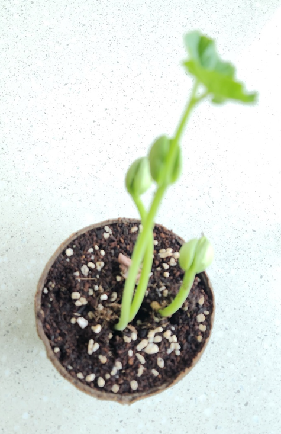

1. 발달 지연 아동의 의의
발달지연은 정상적인 발달 과정에서 기대되는 신체적, 인지적, 사회적, 정서적 발달의 주요 이정표를 달성하지 못하는 상태를 의미한다. 이는 다양한 영역에서 나타날 수 있으며, 운동 발달, 언어 발달, 인지 발달, 사회적 상호작용 및 정서적 조절의 측면에서 지체가 있을 때 진단된다.
발달지연은 일시적일 수도 있고 지속적인 문제로 이어질 수도 있으며, 조기에 발견하고 개입하면 정상 발달 수준에 도달할 가능성이 높아진다. 발달지연은 환경적 요인, 유전적 요인, 임신 및 출생 과정에서의 문제 등 다양한 원인에 의해 발생할 수 있다. 조기에 발견하여 적절한 지도를 제공하는 것은 아동의 건강한 성장과 전반적인 삶의 질 향상을 위해 필수적이다.

2. 발달지연 아동의 발견 및 지도의 중요성
발달지연 아동을 조기에 발견하고 적절히 지도하는 것은 개인, 가족, 사회적 측면에서 매우 중요한 의미를 가진다. 이러한 활동은 아동의 건강한 성장과 발달을 지원하고, 장기적으로 개인의 삶의 질을 높이며, 사회적 비용을 줄이는 데 기여하는 특징이 있다.
첫째, 조기 발견은 아동의 잠재력을 최대한 발휘할 수 있도록 돕는 핵심 요소이다.
발달지연 및 부적응은 초기 개입이 이루어질수록 더 큰 효과를 얻을 수 있다. 아동의 뇌는 발달 초기 단계에서 가소성이 높기 때문에, 적절한 개입은 뇌 발달을 촉진하고 기능 회복 가능성을 높이는 데 중요한 역할을 한다.
둘째, 조기 발견과 지도는 학습 및 사회적 어려움의 예방에 기여한다. 발달지연을 적절히 다루지 않으면, 아동은 학령기에 들어서면서 학업 부진, 사회적 고립, 정서적 문제를 겪을 가능성이 높아진다. 조기 지도는 이러한 문제를 사전에 예방하고, 아동이 또래와 원활히 상호작용하며 학습 활동에 적극 참여할 수 있도록 지원한다.
셋째, 부모와 가족에게도 중요한 의의를 가진다. 발달지연 및 부적응이 있는 아동을 조기에 발견하면, 부모는 아동의 상태를 더 잘 이해하고 올바른 양육 전략을 채택할 수 있다. 이를 통해 부모는 불안과 스트레스를 줄이고, 아동과의 관계를 긍정적으로 발전시킬 수 있다.
넷째, 발달지연 및 부적응 아동의 조기 발견은 사회적 비용 절감에 기여한다. 이러한 문제를 조기에 발견하고 개입하지 않으면, 아동이 성장하면서 더 심각한 문제를 겪을 가능성이 높아지고, 이에 따른 사회적 지원 비용이 증가할 수 있다. 반면, 조기 지도는 아동이 독립적이고 생산적인 사회 구성원으로 성장할 수 있도록 돕는 투자로서 장기적인 경제적 효과를 가져온다.
다섯째, 발달지연 및 부적응 아동을 지도하는 과정은 포괄적인 공동체의 건강과 복지를 증진시킨다. 아동의 건강한 발달은 궁극적으로 가정, 지역사회, 국가의 발전과 연결된다. 아동들의 문제가 조기에 해결될수록, 그들은 성인이 되었을 때 사회에 긍정적인 기여를 할 가능성이 높아진다.
여섯째, 발달지연 및 부적응은 단순히 개인적인 문제가 아니라, 사회적 환경과 밀접한 연관이 있다. 가정 환경, 교육 기관, 지역사회의 협력과 지지는 아동의 발달에 중요한 영향을 미친다. 따라서 발달지연 및 부적응을 조기에 발견하고 지도하는 것은 가정과 지역사회가 함께 노력해야 하는 과업이다.
일곱째, 아동기에 발달지연 및 부적응을 발견하는 것은 다양한 전문가의 협력과 연결된다. 교사, 상담사, 의료진, 사회복지사 등이 유기적으로 협력하여 아동의 전반적인 발달을 지원해야 한다. 이러한 다학제적 접근은 아이에게 가장 적합한 도움을 제공할 수 있는 중요한 방법이다.
여덟째, 발달지연 및 부적응을 다루는 지도 과정은 아동의 자아존중감 형성에 중요한 영향을 미친다. 조기에 적절한 도움을 받으면, 아동은 자신이 사랑받고 가치 있는 존재라는 인식을 가질 수 있다. 이는 성장 과정에서 심리적 안정감을 형성하는 데 기여한다.
아홉째, 발달지연 및 부적응 아동을 조기에 발견하고 지도하면, 또래 간 상호작용에서 긍정적인 경험을 제공할 수 있다. 이를 통해 아동은 사회적 기술을 습득하고, 원만한 대인 관계를 형성할 수 있는 기반을 다질 수 있다.
열째, 발달지연 및 부적응 아동을 위한 지도는 교육적 평등을 실현하는 데 기여한다. 모든 아동은 자신의 잠재력을 발휘할 기회를 가질 권리가 있다. 이를 위해서는 조기 발견과 체계적인 지도가 필수적이다.
결론적으로, 발달지연 및 부적응 아동을 조기에 발견하고 지도하는 것은 아동의 전반적인 성장과 발달에 필수적인 역할을 하며, 가정과 사회의 안정적이고 지속 가능한 발전을 위한 중요한 초석이 된다. 이를 위해 다양한 자원과 전문가가 협력하여 체계적인 지원 체계를 구축하는 것이 매우 중요하다.
참고문헌
권석만(2020). 발달심리학. 학지사.
김유미, 김진희(2018). 아동 발달과 상담. 양서원.
박혜영 외(2021). 유아발달과 문제행동. 학지사.
American Psychiatric Association(2013). DSM-5: Diagnostic and Statistical Manual of Mental Disorders. American Psychiatric Publishing.
Rutter, M., & Bishop, D. (2015). Rutter's Child and Adolescent Psychiatry. Wiley-Blackwell.
World Health Organization. (2018). International Classification of Diseases (ICD-11). WHO.
2024.10.26 - [특수장애] - 경계선 지능 및 발달지연 아동 선별 문제 및 시사점
경계선 지능 및 발달지연 아동 선별 문제 및 시사점
경계선 지능 및 발달지연 선별 과정에서 아동의 개별적인 특성을 존중하고, 객관적이고 공정한 평가를 제공해야 하며, 신뢰와 협력을 형성하는 것이 중요하다. 선별 과정에서 윤리적 책임과 전
think-sis.co.kr
2024.09.22 - [특수장애] - 장애 유아를 위한 특수교육 과정의 필요성-자립심, 잠재력 발휘
장애 유아를 위한 특수교육 과정의 필요성-자립심, 잠재력 발휘
장애 유아를 위한 특수교육 과정의 필요성 장애 유아를 위한 교육과정의 필요성은 장애 유아가 일반적인 교육과정에서 배제되지 않고, 그들의 고유한 발달 요구를 충족시키기 위한 맞춤형 교
think-sis.co.kr